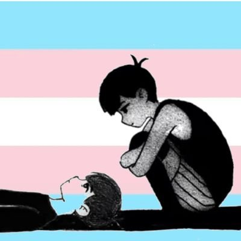

🍀🍥竹蜻蜓🍥🍀
@zqtlovekris99
@omodog1919810 不是女同也会有不信任的，性取向是天生的，但创伤是后天的

omodog🏳⚧
@omodog1919810
在网上认识了很多女同列表，包括在现实生活中也认识了一些女同，在切实地听完到她们对于顺直男性的恐惧（大多来自于家暴、重男轻女和性侵）后，我想部分女同对尚未手术完成的跨女存在不信任是完全可以理解的一件事——甚至因为出生的体力体型差距，她们甚至会对所有出生时指派性别为男的人不信任。